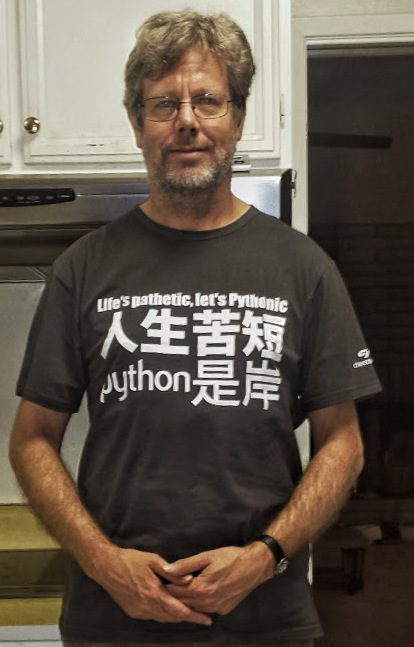

编程语言
Created by 黄弈廷
Guido van Rossum
Facts
1989
Guido van Rossum
Monty Python's Flying Circus
语言排名
| 排名 | 语言 |
|---|---|
| 1 | Java |
| 2 | C |
| 3 | C++ |
| 4 | C# |
| 5 | Python |
| 6 | Objective-C |
| 7 | PHP |
| 8 | VB .NET |
| 9 | JavaScript |
| 排名 | 语言 |
|---|---|
| 1 | JavaScript |
| 2 | Java |
| 3 | PHP |
| 4 | Python |
| 5 | C# |
| 6 | C++ |
| 7 | Ruby |
| 8 | CSS |
| 9 | C |
Python的特点
通用性高级语言
简洁，优雅
高可读性，高开发效率
Battery Included
谁在用Python
Goolge
NASA
Dropbox
豆瓣
...More
各行各业
科学计算: Scipy, Numpy, Matplotlib
人工智能
大型应用软件的脚本语言: 3Ds Max, Maya, Blender, GIMP
树莓派Raspberry pi
翻墙：goagent
IT
操作系统内置: 大多数的Linux发行版本，FreeBSD，OS X
云计算: OpenStack
自动化测试 TA： Robot Framework
持续集成 CI：buildbot
自动化部署与配置管理：Ansible, SaltStack
web开发: Django
PAAS开发: GAE, Heroku, SAE
Python语言
通用性高级语言
脚本语言
动态类型
多范式支持：面向过程，面性对象，函数
GC
强大的内置库
丰富的数据结构：dict，list，priority queue
多线程，多进程
文件系统操作
字符处理：unicode，正则表达式
文本：xml，html，json，csv
网络协议：http，smtp，telnet，ftp
压缩加密算法：zlib，gzip，md5，sha1
其他：日志，命令行解析，unit test框架，调试工具
生态系统
完善的包管理系统：setuptools，pip，virtualenv
统一的第三方中心库PyPI
丰富的第三方资源：63397个包
示例1
计算器
统一的第三方中心库PyPI
丰富的第三方资源：63397个包